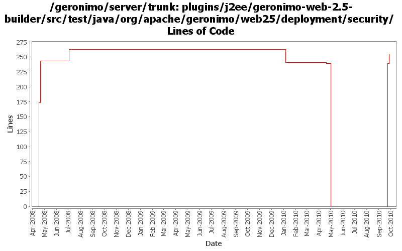

[root]/plugins/j2ee/geronimo-web-2.5-builder/src/test/java/org/apache/geronimo/web25/deployment/security

| Author | Changes | Lines of Code | Lines per Change |
|---|---|---|---|
| Totals | 13 (100.0%) | 541 (100.0%) | 41.6 |
| djencks | 6 (46.2%) | 505 (93.3%) | 84.1 |
| xuhaihong | 7 (53.8%) | 36 (6.7%) | 5.1 |
GERONIMO-5578 WebResourcePermission must be added to the corresponding role for each distinct combination in the cross-product of url-pattern and role-name (Patch from Han Hong Fang)
15 lines of code changed in 1 file:
GERONIMO-5624 patch (slightly modified) from Ivan to use info tree to merge security info from dynamic additions and annotations (this is new for jetty).
239 lines of code changed in 2 files:
a. Calculate web permissions while starting the web module to support setServletSecurity feature in Servlet 3.0
b. Initial support ServletContainerInitializer, some improvements might be needed, such as use ASM ?
c. Support ORDERED_LIBS ServletContext attribute
0 lines of code changed in 2 files:
1. Support http-omission-method configuration in web deployment xml file
2. Move out the http method checking logic, so we could throw Exception as early as possible
17 lines of code changed in 1 file:
GERONIMO-5057 Use those xmlbeans generated by JAVA EE 6 schema files
4 lines of code changed in 2 files:
GERONIMO-5008 Create util methods for all the Geronimo components
0 lines of code changed in 1 file:
Make it easier to find out what permissions are being added to the policy
20 lines of code changed in 1 file:
GERONIMO-3964 Experiment with not using any excluded permissions by simply not granting them in the first place
72 lines of code changed in 1 file:
GERONIMO-3964 Concentrate the web security analysis in one place
174 lines of code changed in 2 files: